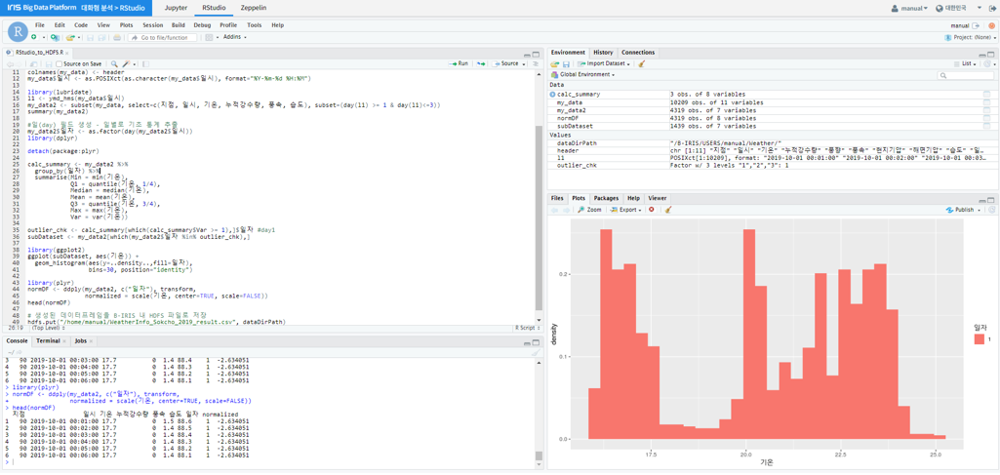
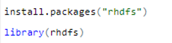
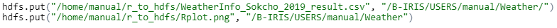
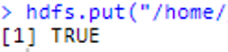
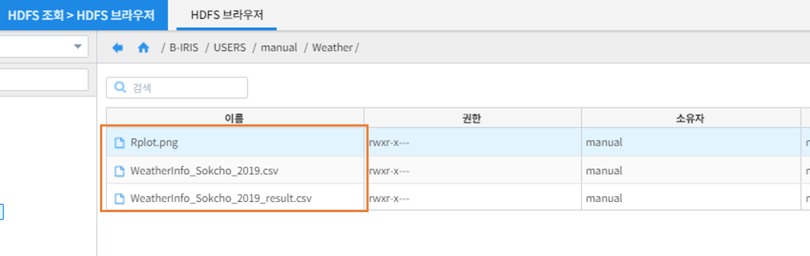

RStudio를 활용한 분석과 분석결과를 HDFS에 저장하기¶
개요¶
본 문서는 RStudio에서 수행된 분석 결과 데이터와 모델 객체를 HDFS에 저장하는 방법을 기술하고 있습니다.
rhdfs 패키지 설치 및 실행¶
IRIS에서 제공하는 RStudio에서 분석한 결과 생성된 data frame은 R의 rhdfs 패키지를 이용하여 HDFS서버에 적재할 수 있습니다.
rhdfs 패키지는 R 과 Hadoop 분산 파일 시스템을 연결하여 파일 시스템 관리 기능, 개별 파일을 읽고 쓰는 등의 기능을 제공합니다.
기존에 rhdfs 패키지가 설치되지 않은 경우 install.packages(《패키지명》) 명령어를 이용하여 설치합니다.
data frame 저장 및 HDFS 복사¶
결과 data frame 및 plot 이미지를 .csv, .png 등의 형태로 로컬 파일 시스템에 저장합니다.
hdfs.put 기능을 통해 로컬 파일을 HDFS의 위치에 복사합니다.
hdfs.put(《원본 파일/디렉토리 위치》, 《HDFS 파일/디렉토리 위치》)
정상적으로 수행되었을 시 Console 창에서 TRUE 임을 확인할 수 있습니다.
[HDFS 브라우저] 에서 확인¶
[HDFS 조회] > [HDFS 브라우저] 에서 해당 파일이 적재된 것을 확인할 수 있습니다.
